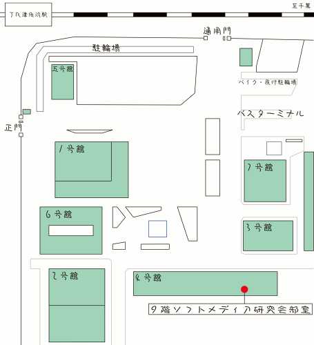

千葉工業大学公認サークルです。パソコンを中心に使って創作活動を行うサークルです。 プログラム班、 マルチメディア班、 DTM班の３つがあります。 毎年、5月に行われる文化の祭典、11月の津田沼祭にて作品を展示します。他にも、コミックマーケットやM3などの外部のイベントにも出展しています。
プログラム班は、主にゲームの制作やアプリケーションの開発を行っています。
プログラムをやったことある方も、やったことがない方も大歓迎です。 プログラミングをしたことない人向けに講座なども行っています。
詳しい流れはプログラム班のページをご覧ください。
Multi（多）Media（情報媒体）を用いて自己の表現を行う集まりです。
CG , Flash , Animation，etc…表現方法はいくつもあります。班員は自分に合う表現方法を自由に選んで津田沼祭で展示したりゲームのイラストとして使ったりしています。
入部するほとんどの人が初心者です。講座や経験者と交流し初心者からでも始められる環境が整ってので是非参加してみてください。
PC上でDAWという作曲ソフトを使い、作曲を行います。年に2回の同人音楽即売会や『文化の祭典』『千葉工業大学祭』向けて曲を作り展示します。
プログラム班はプログラミング技術を用いてゲームやアプリケーションの開発を行っています。経験者は自分の好きな言語で開発を進めることができ、未経験者や初心者は講座を受けることでプログラミング技術を身につけることができます。プログラミングやゲーム製作に興味のある方はぜひ見学にお越しください！
マルチ班はお絵描きやモデリングを楽しみ、共に極めていく班です！初めて描く人でも、ちょっとでもイラストに興味あったら気軽に見に来て下さい！
DTM班はパソコンを使って作曲活動をしています。自分の思う音楽を形にしたい方、ぜひ、ソフトメディア研究会DTM班に見学にお越しください！ 経験者も未経験者も大歓迎です！
全部員が参加必須なのは、水曜日の18:45から行われる部会のみです。 他の活動は班によって違いますが、平均で月に1から2回発表会を行なっています。 創作活動は、各自自分の好きな時間に、部室や自宅で行っています！
毎週水曜日午後6:45から部会があります。行事の人員を選出したり、設備購入等の議決を取ったり、重要な事を話し合います。教室は月によって変わります。 教室の連絡は部室前にて行っています。
質問や、雰囲気を見てみたいなどでもいいので是非1度お越しください。
質問などありましたらお気軽にcitsofme(at)gmail.com、またはTwitterまで連絡してください。